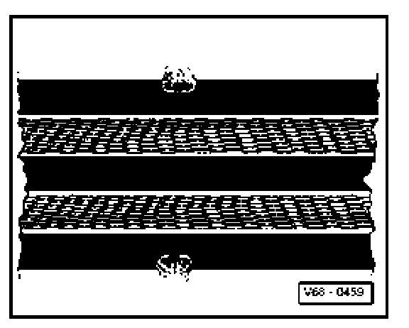

Belt Webbing
Belt webbing
- Pull belt completely out of inertia reel or lap adjustment tongue.
- Inspect belt straps for dirt and, if necessary, wash with mild soap solution.
- If either of the following illustrated damage examples (1 and 2) are determined on accident vehicle-replace seat belt assembly.
- If damage as illustrated under points 1, 2 or 3 is found on vehicle which has not been involved in an accident, it is sufficient to replace damaged belt only.
Belt webbing cut, torn or chafed.

Webbing loops on belt edge torn.

Burn spots from cigarettes or similar
One side of belt edge deformed or area of belt edge is wavy